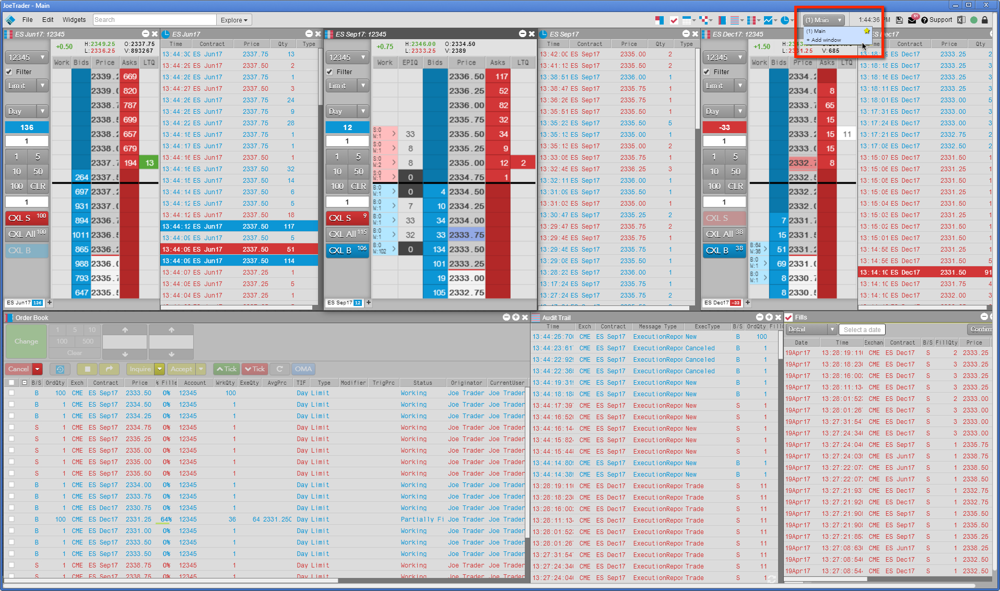
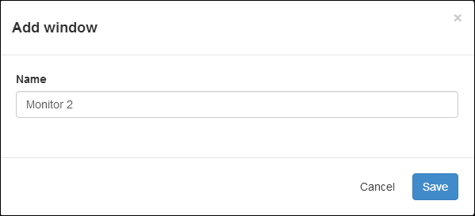
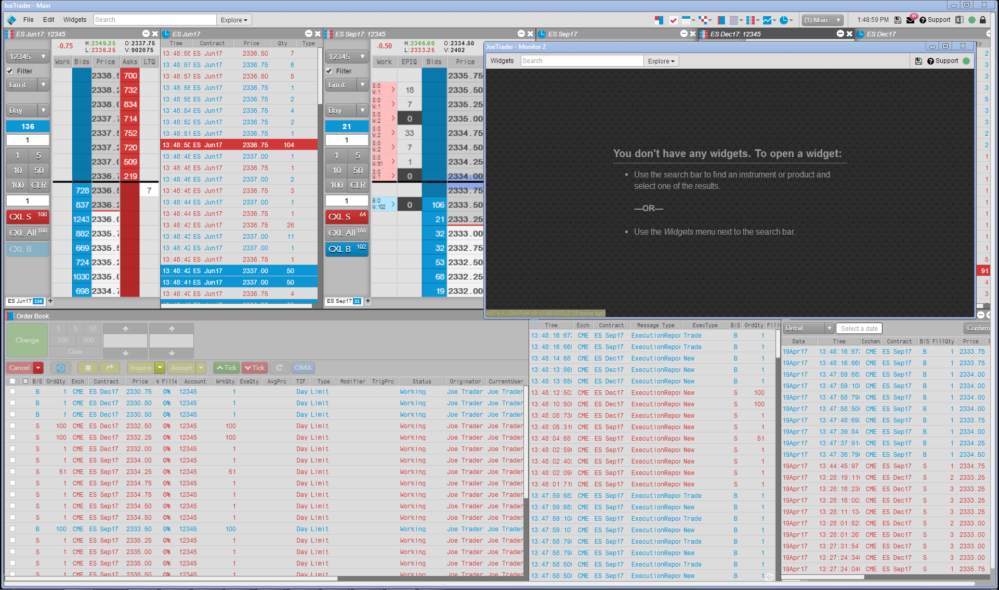
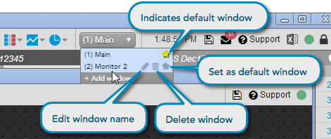
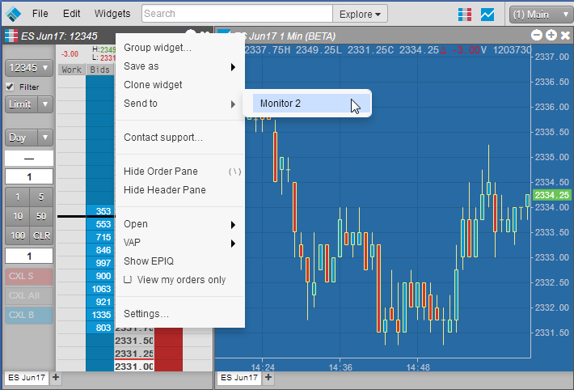
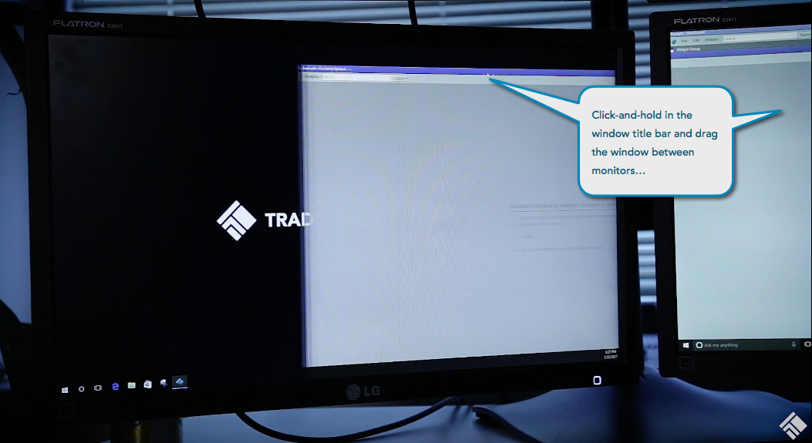
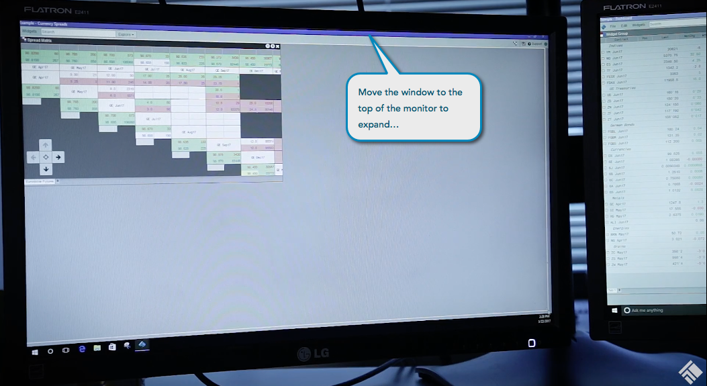

Using the workspace windows functionality, you can add windows and switch between multiple monitors in a single workspace. After adding a window, you can also rename it, delete it, or set it as your default window.
When you reopen a saved multi-monitor workspace, the windows will automatically return to the same location or monitors they were at when the workspace was previously saved and closed.
After you create a multi-monitor workspace in TT Desktop, you can:
To add a window:
From menu bar, click the Windows drop-down selector and click +Add window.

Enter the name for the window, and click Save.

The new window opens and is added in the same monitor as the main window.

Optionally, from the Windows drop-down selector, you can change the default window, change the name of a window, and delete a window.

Widgets can be sent to other windows either in the same monitor or a different monitor.
To send a widget to another window:

To move a window to another monitor:

Optionally, you can move the window to the top of the monitor or double-click the title bar to fit the window to the entire monitor.
